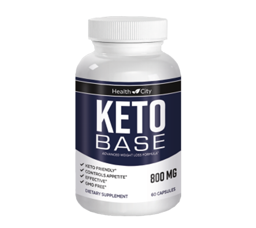
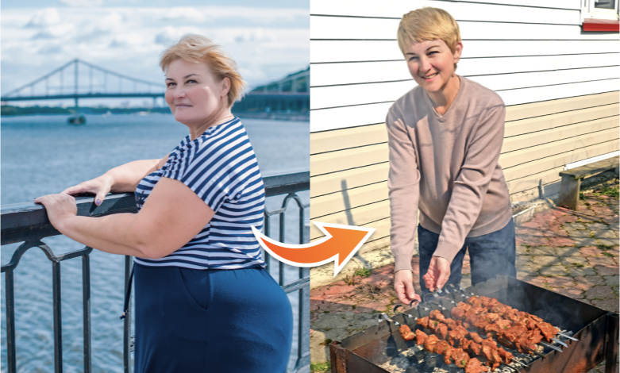
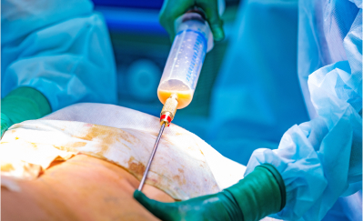
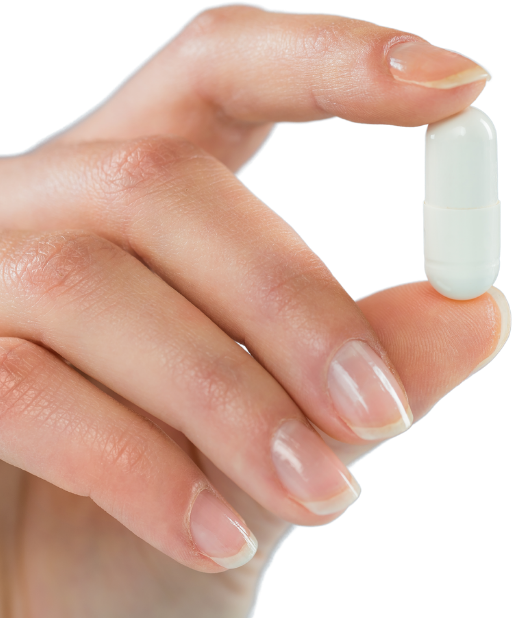
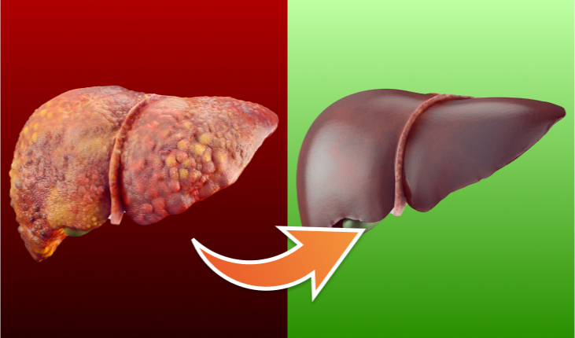
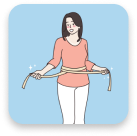
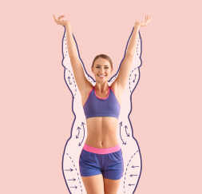

Hallo. Ik ben dokter Diederik Gommers , directeur van het Europees departement voor gezondheid in Amsterdam . Vandaag heb ik het genoegen u een grote vooruitgang in de moderne wetenschap te presenteren: de natuurlijke prolipolytische formule Keto Base. Deze formule is verkrijgbaar in de vorm van capsules, gemakkelijk in te nemen met of zonder water . Laat u niet misleiden door het eenvoudige uiterlijk; de werking is ongelooflijk krachtig.

Dankzij deze formule verwijder je snel alle overtollige vetten, veilig en moeiteloos. Je lichaam wordt plotseling slank en gespierd, alsof je elke dag sport en een streng dieet volgt, maar zonder enige inspanning.
Bovendien zet je al het vet om in energie! Klinkt dat als een wonder? Misschien, maar het heeft niets met wonderen te maken. Dit is pure wetenschap.
„Ik eet alles en ben zo slank als een draadje!”

Op mijn werk hebben we een kantine waar je zelf kunt opscheppen en betaalt op basis van het gewicht van je bord. Sinds ik een maand geleden begon af te vallen met deze prolipolytische formule, eet ik daar en neem ik alles wat ik lekker vind: aardappelen, biefstuk, pasta... En ik vergeet nooit het dessert: pudding of vanillecrème. Heerlijk!
Mijn collega's, die vroeger grapjes maakten over mijn overgewicht, eten nu alleen nog maar salades en magere yoghurt. Ze zijn hongerig en gefrustreerd. En ik? Ik ben verzadigd en blij! Een nieuwe buurvrouw in ons appartementencomplex, nog best jong, vroeg me of ik een fitnesscoach was omdat ik zo'n geweldige conditie had voor mijn leeftijd. Ik stond perplex!
Oriane Brouwer , 51 jaar, accountant in Gorinchem
Verloor 48 kg in 7 weken.
Beter dan een liposuctie
Wetenschappers noemen de prolipolytische formule gekscherend een „liposuctie in een zakje”. De effecten ervan kunnen inderdaad lijken op die van een chirurgische liposuctie. Echter, de prolipolytische formule voor gewichtsverlies heeft, in tegenstelling tot liposuctie:
- Kost geen fortuin
- Brengt geen gezondheidsrisico's met zich mee
- Is daadwerkelijk effectief.
CHIRURGISCHE LIPOSUCTIE

- Kost minstens 1000 euro
- Elke operatie richt zich op slechts één lichaamsdeel
- Verlies van ongeveer 4 kilo
- Verwijderd vet wordt uit het lichaam geëlimineerd
- Vereist ziekenhuisopname en medische zorg
- Kan bijwerkingen veroorzaken: pijn, zwelling, brandwonden
- Vereist een caloriearm dieet na de operatie
- Vereist lichaamsbeweging na de operatie
PROLIPOLYTISCHE FORMULE
Keto Base ®

- Geen hoge kosten, omdat het zichzelf terugverdient
- Je verliest gewicht over het hele lichaam
- Je verliest zoveel als je wilt, met een tempo van 16 kg in 3 weken.
- Lichaamsvet wordt omgezet in energie
- Je valt rustig thuis af
- 100% veilig, geen bijwerkingen, interfereert niet met behandelingen
- Geen dieetverandering nodig
- Geen fysieke inspanning nodig
Het maakt niet uit waarom u overgewicht heeft, het belangrijkste is dat u ervan af wilt
Er is niet slechts één reden voor overgewicht. Er zijn er veel. Misschien eet u te veel en beweegt u te weinig. Misschien heeft u hormonale problemen of aandoeningen die overgewicht veroorzaken. Misschien moet u steroïden gebruiken of heeft u een genetische aanleg voor obesitas. Dit zijn de redenen waarom afvallen alleen met dieet en lichaamsbeweging onmogelijk is. En weet u wat?
Het maakt niet uit. Met de pro-lipolytische formule maakt het niet uit waar uw overgewicht vandaan komt. Hier staat vetweefsel centraal. Alleen dit weefsel wordt aangevallen en de formule slaat genadeloos toe... Daarom valt u snel, gemakkelijk en aangenaam af.
Het maakt niet uit hoe ernstig uw overgewicht is. Of u nu 10, 25 of 50 kg wilt verliezen, u zult slagen zonder problemen. Simpelweg, hoe meer kilo’s u wilt verliezen, hoe langer u de pro-lipolytische formule moet gebruiken. En dat is volledig veilig.
Eén capsule kan tot 100 vetcellen vernietigen .
De pro-lipolytische formule is zo effectief in het verbranden van vetweefsel omdat het op cellulair niveau werkt. Elke capsule bevat tot 100 intelligente moleculen die vetcellen oplossen met de precisie van een laser . De moleculen zijn zo geprogrammeerd dat ze binnen 4 seconden na opname door het lichaam de vetcellen binnendringen. Vervolgens vindt er in de cel een zeer eenvoudige reactie plaats.
Wanneer de slimme molecuul van de pro-lipolytische formule de vetcel bereikt, dringt het naar binnen en valt het de cel van binnenuit aan. Daarna breekt de vetcel af in 3 delen: een energie-eenheid, water en kooldioxide. Wat betekent dit?
Dit betekent dat wanneer u de pro-lipolytische formule gebruikt, u ongewenst vet omzet in energie. U geeft uw spieren en hersenen meer kracht en voelt zich levendiger en optimistischer. Geen enkele inspanning lijkt een probleem. U wordt niet moe, zweet niet en raakt niet buiten adem wanneer u trappen oploopt of de bus achterna rent. U voelt zich licht en fysieke activiteit wordt een echt plezier.
En wat gebeurt er met de componenten die uit de vetcellen zijn verkregen, namelijk water en kooldioxide? Wel, het water wordt gemakkelijk uitgescheiden via de nieren en kooldioxide wordt simpelweg uitgeademd. U hoeft niets te doen. Daarom valt u moeiteloos en snel af, zonder enige stress voor uw lichaam.
"Ik heb nu een sixpack en ik heb nog nooit gesport!"
Ik heb deze behandeling voor mijn vrouw gekocht. Ik geef toe dat ik lachte toen ze ermee begon. Wie had gedacht dat een capsule vet kon verbranden? Maar toen ik zag dat ze meer dan 20 kg verloor, stopte ik met lachen. Ze heeft een platte buik en stevige billen. Een totaal nieuwe vrouw. Met mijn buik leek ik naast haar op een oger.
Dus begon ik ook met het nemen ervan. Ik zweer dat ik nu een sixpack heb. Maar niet omdat ik ben gestopt met bier drinken of geen pizza of friet meer eet tijdens wedstrijden. Mijn collega’s geloven me niet als ik zeg dat ik niet naar de sportschool ga. Maar dat doe ik echt niet. Waarom zou ik?
Gaspard Dubois, 37 jaar, buschauffeur in Bordeaux
Verloor 22 kg in 4 weken.
Kijk hoe eenvoudig het is:
Neem tweemaal per dag een capsule uit de prolipolytische formule
Het kost u slechts 30 seconden. Neem een capsule in de ochtend en een andere in de avond, met of zonder water Binnen korte tijd begint uw vetweefsel omgezet te worden in energie. U heeft uw ochtendkoffie niet meer nodig!
„Een tweede jeugd beleven!”
Ik heb de menopauze al doorgemaakt, dus we weten dat de stofwisseling vertraagt. Daarnaast gebruik ik medicijnen, steroïden. Ik was erg ziek en zo zwaar als een sumoworstelaar. Ik ging van diëtist naar diëtist, van dokter naar dokter. En allemaal zeiden ze hetzelfde. Dat ik nooit zou kunnen afvallen en dat ik dat maar moest accepteren.
Maar toen ik na 2 maanden terugkwam, met 41 kg minder, viel zijn mond open van verbazing. Hij wist niet waar hij zich moest verstoppen van schaamte.
Ze wilden me laten geloven dat er geen hoop meer was. Ik was bang dat ik zo zwaar zou worden dat ik met een kraan opgetild moest worden. Maar ik nam het heft in eigen handen. Ik ben slank en beleef een tweede jeugd! Het was het waard!
Solène Van Dijk , 68 jaar, gepensioneerd uit Haarlem
Verloor 41 kg in 8 weken.
Het is heel belangrijk: visceraal vet stopt met het verkorten van uw leven
Visceraal vet is het vet dat zich ophoopt in de buikholte en borstkas. Dit vet hecht zich aan organen zoals het hart, de longen, de nieren, de lever en de alvleesklier. Het teveel ervan is absoluut schadelijk voor deze organen en bemoeilijkt hun werking. Bovendien slaat dit vet zware metalen en gifstoffen op, die uw lichaam vergiftigen.
Visceraal vet en de schadelijke stoffen die zich daarin ophopen, beschadigen de belangrijkste organen van uw lichaam. Het hart heeft steeds minder kracht om bloed te pompen en de nieren kunnen het niet meer goed filteren... Daarom is het zo belangrijk om visceraal vet te verminderen. Wetenschappers waarschuwen al jaren dat een teveel aan dit vet de levensverwachting gemiddeld met 14 jaar verkort.

De prolipolytische formule verwijdert gevaarlijk visceraal vet uit uw lichaam en daarmee ook zware metalen en gifstoffen. De organen die bevrijd worden van vet en gereinigd van gifstoffen zullen u dankbaar zijn. U krijgt minstens 5 keer meer energie en voelt zich 20 jaar jonger!
Vet smelt letterlijk als... boter in een pan
Stel u voor dat u boter in een hete pan legt. Ziet u hoe het vet smelt? Wel, in dit tempo verdwijnt uw vetweefsel als u de prolipolytische formule gebruikt.
Ik herhaal het nogmaals:
- U hoeft geen dieet te volgen
- U hoeft niet te sporten
- U hoeft niets in uw leven te veranderen
De prolipolytische formule werkt direct in op de vetcellen. Daarom is het de enige methode voor gewichtsverlies die zo innovatief en effectief is.
100% veilig voor de gezondheid
De moleculen die vet afbreken en deel uitmaken van de prolipolytische formule werken intelligent. Ze zijn "geprogrammeerd" om alleen te reageren met vetcellen. Voor deze moleculen zijn andere cellen in het menselijk lichaam onzichtbaar. Dit is een zeer belangrijk voordeel. Daarom is het risico dat de prolipolytische formule uw lichaam schaadt 0%. Dit is absoluut gegarandeerd en bevestigd door een certificaat van veiligheid en natuurlijkheid.
Een ander zeer belangrijk voordeel van de prolipolytische formule, vooral voor vrouwen, moet ook worden vermeld. Namelijk dat de formule 100% van de cellulite verwijdert in slechts 3 dagen gebruik!
„Niemand geloofde dat ik het zou halen...”
Na mijn zwangerschap kreeg ik mijn buik en dijen niet meer in vorm. Ik had zelfs een dubbele kin. Mijn moeder, tantes en al mijn vriendinnen zeiden dat dit nu eenmaal het vrouwenlichaam is... Dat ik me beter kon wijden aan mijn man en zoon in plaats van te klagen dat ik geen slanke taille had. Serieus? Ik was nog lang niet oud en met die love handles wilde ik me echt niet vertonen bij het zwembad of op vakantie. Ik weet niet wat er met me zou zijn gebeurd als ik het artikel over deze behandeling niet had gelezen. Na een maand ben ik net zo slank als voor mijn zwangerschap. Meer nog, ik zie er beter uit, want vroeger had ik cellulite en een beetje slappe huid.
Nu ben ik in vorm, alsof ik elke dag train met Jill Cooper. Ahaha.
Clémence Timmermans , 33 jaar, lerares uit Alkmaar
Verloor 19 kg in 1 maand.
Dankzij de prolipolytische formule:
Zult u al het opgehoopte vet in uw lichaam omzetten in vitale energie. Geef toe, dat is een fantastische verandering.
U verwijdert 100% van de cellulite na 3 dagen en begint af te vallen met een snelheid van 16 kg in 3 weken. U hoeft zich niet langer te schamen voor uw lichaam. U kunt trots naar het strand, het zwembad of de sauna zonder enige gêne. U kunt de kleding dragen die u wilt, en niet alleen die welke past.
U redt uw gezondheid! U verwijdert opgehoopte afvalstoffen, gifstoffen en zware metalen uit uw lichaam. Ze tasten uw lichaam niet langer aan. Maar het allerbelangrijkste is dat u door overtollig gewicht te verliezen uw gewrichten verlicht en hun degeneratie voorkomt. U normaliseert uw suiker- en cholesterolwaarden. U beschermt uzelf tegen diabetes, atherosclerose, beroertes en hartaanvallen... U verlengt simpelweg uw leven.
Er is geen enkele belemmering meer om eindelijk slank te worden
U houdt er niet van om honger te hebben en het plezier van eten op te geven. U wilt eten wat u lekker vindt, niet alleen wat toegestaan is. Moet dit een belemmering zijn om slank te zijn? Nu, NEE!
U kunt genieten van uw favoriete gerechten en desserts en maat S dragen. U zult geen millimeter cellulite op uw billen en dijen hebben. U kunt eindelijk een gelukkige en gezonde persoon zijn met een slank lichaam. En dat in slechts 21 dagen!
Ik wil u niet ontmoedigen om te sporten, maar... U heeft nu een methode waarmee u vet kunt verbranden zonder enige training. Uw lichaam zal zo atletisch zijn dat mensen denken dat u dagelijks naar de sportschool gaat of hardloopt.
Samengevat, de prolipolytische formule voor gewichtsverlies:
Eenvoudig in gebruik: neem gewoon tweemaal per dag een capsule, het kost slechts een paar seconden
Werkt onafhankelijk van geslacht, leeftijd, oorzaken en de duur van het overgewicht.

Garandeert een drastische gewichtsvermindering: minimaal 16 kg in 3 weken, terwijl de huid verstevigd wordt en cellulite volledig verdwijnt.
Vereist geen dieet, lichaamsbeweging of verandering van levensstijl.
Beschermt de gezondheid tegen ernstige ziekten veroorzaakt door overgewicht en ontgift het lichaam van gifstoffen.
Is 100% veilig voor het lichaam en veroorzaakt geen bijwerkingen.
Uw garantie op succes in de strijd tegen overgewicht
De prolipolytische formule verbrandt vetweefsel sneller dan diëten en lichaamsbeweging. Het werkt onafhankelijk van het aantal overtollige kilo’s, de oorzaken van overgewicht en de duur ervan.
De slimme moleculen, ontwikkeld na meer dan 20 jaar onderzoek, vormen een ware revolutie in de medische wereld. Dankzij dit heeft u bij het kiezen van deze behandeling de garantie op absolute tevredenheid.
GARANTIE VAN EFFECTIVITEIT
De effectiviteit van de prolipolytische formule voor gewichtsverlies is onomstotelijk bewezen in 27 laboratoriumstudies. Het is uitvoerig geanalyseerd in 9 wetenschappelijke instituten wereldwijd. Meer dan 30.000 mensen die al zijn afgevallen met deze formule bevestigen de doeltreffendheid ervan.
GARANTIE VAN VEILIGHEID

De behandeling met de prolipolytische formule is speciaal ontwikkeld om uitsluitend op vetcellen in te werken. Het heeft geen invloed op andere cellen in het menselijk lichaam. Wetenschappelijke studies tonen onomstotelijk aan dat het risico op bijwerkingen na de behandeling 0% is.
Iedereen verdient gezondheid en schoonheid
Als de prolipolytische formule een paar jaar geleden was ontwikkeld, had dit veel leed kunnen voorkomen. Hoeveel mensen hebben geleden aan diabetes of aderverkalking als gevolg van overgewicht en zijn vroegtijdig overleden? Hoeveel mensen lijden nog steeds aan gewrichtspijn, slaapapneu, een verzwakt hart... Hoeveel mensen worstelen dagelijks met complexen of depressie door weer een mislukte poging om af te vallen?
Gelukkig is dit nu voorbij! Geen lijden meer. Iedereen verdient een slank en gezond lichaam. Iedereen verdient het om trots te zijn op hun uiterlijk.
Dit is een afslankmethode die 10 keer beter is dan alle andere samen
Wist u dat...
Een jaar geleden een oplichter de prolipolytische formule gebruikte om geld te verdienen door mensen te laten afvallen? Een wetenschapper, een voormalige medewerker van het Europees Departement voor Gezondheid, stal de formule uit het laboratorium.
Het ergste was dat de oplichter zich voordeed als een genezer. Hij gebruikte de formule om afslankrituelen uit te voeren en vertelde mensen dat hij hen genas met zijn bovennatuurlijke krachten. Voor deze ‘diensten’ vroeg hij tot wel 10.000 dollar.
U hoeft geen fortuin meer uit te geven om effectief af te vallen en uw gezondheid terug te krijgen
Gelukkig hoeft u vandaag geen 10.000 dollar te betalen om af te vallen. Vanaf morgen kunt u de prolipolytische formule thuis hebben en beginnen met 16 kg afvallen in 3 weken voor een minimale prijs.
Wij brengen de formule in Europa op de markt onder de naam Keto Base. De prijs omvat alleen de kosten voor het extraheren van de slimme moleculen die vetweefsel verbranden. Tot nu toe moest men een hoge prijs betalen voor de verpakking.
Echter, er is een korting van 50% voorzien, zodat u de behandeling voor de helft van de prijs kunt krijgen. Hierdoor zal geld geen obstakel meer vormen op uw weg naar een slank, zorgeloos en gezond lichaam, vol positieve energie.
Nu is het aan u: wilt u tot 16 kg verliezen in 3 weken zonder moeite?
Begin met de verandering naar het betere. Krijg wat u verdient: gezondheid en een gelukkig leven. Vul het bestelformulier in om de prolipolytische formule te verkrijgen als onderdeel van een gratis financiering.
Ik garandeer u dat u na 21 dagen in de spiegel zult kijken en een persoon zult zien die 16 kg lichter is. Dan zult u glimlachen en geluk in uw ogen zien. U zult tegen uzelf zeggen: "JA, dit was de juiste beslissing!". En u zult daar heel dankbaar voor zijn!